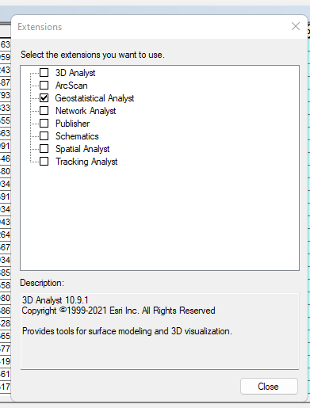

Testing Compactness, Census Hierarchies & Qualitative Variables for Choropleth Mapping

Preamble
This week’s assignment will feature mapping US Census Data via the choropleth method. In this type of mapping, polygons hold the mapping variable(s). In this demonstration lab, we will explore dimensions of US Census polygons generally; testing for compactness, reviewing census hierarchy and mapping race in New York State via the dot density method.
First, we will test for compactness of US congressional districts via the Polsby Popper method
Second, we will review standard US Census hierarchy at large scales.
Third, we will map several race variables for New York State Census Tracts using the dot density method.
Data
ACS_NY-census-tracts_2020= US Census Data for New York State Census Tracts (Part III).cb_2014_us_cd114_500k= 114th US Congressional Districts (Part I).cb_2018_us_cd114_500k= 116th US Congressional Districts (Part I).tlgdb_2022_a_36_ny.gdb= Geodatabase of various Census geographies for New York State (Part II).
Part I:
Open ArcGIS and point ArcCatalog to the c.4.demo.lab.data lab data. Remember to uncompress (unzip) the data directory before proceeding. Save the connected .mxd as lab4.mxd.
The Polsby-Popper measure is the ratio of the area of the district to the area of a circle whose circumference is equal to the perimeter of the district. The formula for calculating the Polsby-Popper score Formula is as follows where A is the area of the district and P is the perimeter of the district:
\[ 4pi*A/P^2 \]
Load in both the 114th and 116th US Congressional Districts to the lab4.mxd. Make sure to use the _albers versions. In both layers, create a new field score as data type Double.
albers version of each.score fieldNext, open the Field Calculator and enter the following formula for the compactness score:
([Shape_Area]*4*3.14)/( [Shape_Leng]* [Shape_Leng])
Next, within the score field, access the Statistics tab and note the Mean value for each version of Congressional Districts.
Next, access Extensions from the top bar menu and toggle ON the Geospatial Analyst. We will review how this extension can help us explore a data field.

Next, within the score field, we will apply a Standard Deviation classification for Congressional Districts so that we can easily see the most vs. least gerrrymandered districts.
score via Standard Deviation MethodPart II:
Remove the Congressional Districts from the lab4.mxd and point to the .gdb for the American Community Survey 2016-2022 Census Geographies:
.gdb Structure w/in ArcCatalogUtilizing the US Census ’TIGER’metadata, we will discuss in some depth the various census geographies, how they operate, and what features are best used for various mapping scenarios.
Part III:
In this last part of the Class 4 Demonstration Lab, we will turn to Categorical symbolization for US Census Data. We will use the Dot Density approach for race demographics in New York State.
Remove the data from Part II and replace with the American Community Survey data for New York State:
The next symbolization will feature Categorical values based racial categories. The core racial categories are in table B02001:
- B02001e2 Total Population, White
- B02001e3 Total Population: Black or African American
- B02001e4 Total Population: American Indian and Alaska Native
- B02001e5 Total Population: Asian
- B02001e6 Total Population: Native Hawaiian and Other Pacific Islander
- B02001e7 Total Population: Some other race
- B02001e8 Total Population: Two or more races
- B02001e9 Total Population: Two races including Some other race
- B02001e10 Total Population: Two races excluding Some other race, and three or more races
We will discuss Table B03002: Hispanic or Latino Origin by Race.
We will then turn to Table B03003: Hispanic or Latino Origin.
“hispanic/latino” is not a race, but a characteristic tracked independently. Note that hispanic respondents disproportionately choose “some other race alone”: nationwide, more than 25% of hispanics make that choice, compared to a fraction of a percent of non-hispanics. Census Reporter.
Next, begin the Dot Density mapping process by placing racial category fields into the symbol:
Concluding Remarks
In this second thematic mapping lab, we explored important dimensions of choropleth mapping and applied symbolization to racial categories using the Dot Density approach. In the upcoming technical lab (Wednesday), we will dive deeper into choropleth mapping for US Census data using the American Community Survey 5-year product.